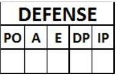
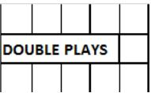

Defense information .
 ATTENTION: If a fielder plays in several defensive roles during the c ourse of a game, putouts, assists, errors, double or triple plays and innings played must be listed separately for each of the defensive roles taken, and must obviously be noted on the line corresponding to the role taken.
| LOB |
Number of runners left on base in the inning. |
| A |
Number of assists by each fielder, noted on the line o pposite the name. |
| E |
Total number of decisive errors and extra base errors committed by each fielder, noted on the line opposite his name. |
| DP |
Number of times each fielder participated in a double or t riple play, noted on the line opposite his name. |
| IP |
Number of innings played by each fielder, noted on the line opposite his name. When a fielder is substituted or changes position during an inning, the number is calculated according to the number of putouts. The fraction of an inning is indicated with the whole number followed by ".1" if there has been one putout or ".2" if t here has been two. Three putouts are equivalent to one inning . |
Information on pitchers, assuming they go to bat from the start, is always noted next to their name in the batting order.
At the bottom of each column, after the spaces reserved for pitchers’ fielding performance, is the total of each individual column.
In the case of innings played, the total number of innings played by the team should be noted, not the sum of the columns of innings played by each individual player.
 The number of double or triple plays made by the team is marked in the box to the right of the heading "DOUBLE PLAYS".